Multivariate Ordination
Cody Reed and Gareth Blakemore
Ordination thrives on complex networks of intercorrelations by simplifying multivariate data into low dimensional graphics. In doing so, it helps us focus on important dimensions and avoid misinterpreting noise in the data. This can be useful for pattern detection (often used for species composition) and hypothesis generation.
Ordination can also be used to examine relationships between enviornmental gradients and community structure.
Ordination models can be divied into two categories, indirect and direct gradient analyses.
Indirect Gradient Analysis
Indirect gradient analysis seeks to interpret multivariate environmental space as the species sees it by positioning items according to covariation and association among species or plots. In an indirect gradient analysis of plots or sample sites, points that appear closer to each other share similar specis composition. An indirect gradient analysis of species, on the other hand, reveals species that then to co-occur in the landscape.
Methods: - Bray-Curtis (Polar) Ordination - Principal Coordinate Analysis (PCA) - Correspondence Analysis (CA) - Detrended Correspondence Analysis (DCA) - Nonmetric Dimensional Scaling (NMDS)
Overview of Indirect Gradient Analysis Methods
Bray-Curtis (Polar) Ordination
The Bray-Curtis methos was develope in 1957 by Bray & Curtis as a fast and easy method of multivariate analysis. It was originally designed so anyone could do it with no more than a calculator and compass. The method is based on Euclidean geometry and arranged points in reference to endpoints or “poles”. It is not used much anymore but, because of its simplicity, it’s useful for explaining the basics of ordination
Steps for calculating Bray-Curtis Ordination
(Adapted from B. McCune, Grace, J, Urban, D. Analysis of Ecological Communities. Vol, 28. 2002.)
1. Construct primary data matrix (plots x species)
2. Calculate dissimilarity matrix (distances between all pairs of N points) There are many methods that can be used to calculate dissimilarity matrix. Bray-Curtis dissimilarity matrix and Soensen similarity index are two that are commonly used
Bray-Curtis dissimilarity {BC_{ij}=1-{}} Where C is the sum of the values found at both sites and S is the total number of species counted at each site
3. Select most distant points as endpoints
4. Calculate position of each point on the axis between reference points
5. Calculate residual distance between points
6. Calculate residual sum of squares and compare with original sum of squares to determine percent of original variance explained by each axis.
7. Substitute residual matrix for dissimilarity matrix and construct successive axes
8. Repeat steps 3-6 for additional axes

The result is an ordination of points were similar sites or species are grouped together.
Useful for: - Heuristic purposes (i.e. extracting ecologial gradients) - Non-linear relationsips among species
Issues: - Best for heuristic purposes - The simplicity of the method is not necessary with modern computing power
Principal Component Analysis (PCA)
PCA was develped by Pearson in 1901 as data reduction method used to seek the strongest relationships in multivariate data. It seeks the strongest linear correlation structure and the results produce the amount of variation explaiend by each axis (eigenvalues)
Useful for: - Data with approximately linear relationships between variables - Distilling suites of intercorrelated variables - Ordinating homogenous community data sets - Data sets that do not include null variables
Issues: - Distortion of heterogenous data sets (“arch effect”) - Only uses Euclidean distances - Results are influenced by outliers - Requires linear relationships & multivariate normality
Principal Coordinates Analysis (PCoA)
PCoA is a more general form of PCA and was developed in an attempt to resolve some of the issues with PCA. It can accomodate non-Euclidean distances but suffers from many of other issues that PCA does.
Correspondence Analysis (CA)
CA uses repeaded weighted averaging (“reciprocal averaging”) of site scores to yield species scores and visa versa. With CA, axes are rotated through ordination space to maximize correspondence between speices and the sample space.
Useful for: - Abundance data - Identifing species distribution along an environmental gradient
Issues: - Second and subsequent axes usually ahve quadratic relationships to the first - Distances are compressed at the end of each ordination axis - Chi-square distance measure over-emphasizes rare species
Detrended Correspondence Analysis (DCA)
a.k.a. DECORANA. DCA is a brute-force attempt to resolve the first two issues with CA. However, the detrending used to resolve those issues can be extreme and hide patterns. The detrending also relies on arbitrary asix segmentation and twists the space which produces new artifacts.
Nonmetric Miltidimensional Scaline (NMDS)
NMDS is a non-parametric alternative to DCA. It seeks to display the strongest structue for the data, without assuming linear relationships between variables or a Gaussian model of species distribution. It does this through an iterative search for the best position of n objects in k dimesnions that minimizes the stress of the configuration. Essentially, it moves thorugh the dimensional landscape to find the lowest spot on the landscape. In order to avoid the possibility of ending up in a local minima rather than the global minima, multiple interations of NMDS should be run.
Stress in NMDS is deined as departure from monotonicity between the dissimilarity in original space and dissimilarity in the reduced space. In other words, if the 2 or 3 dimensional representation of your data is a highly distorted representation of the original data, stress will be high. Scree plots are often used to determine the number of dimensions required to minimize stress.

Useful for: - Non-normal, arbitrary and discontinuous data - Avoiding assumptions of linear relationshisp
Issues: - Advanced computing power required (this isn’t really an issue any more, but initially delayed adoption) - Concerns about local minima
Direct Gradient Analysis
In direct gradient analaysis, items are positioned according to measurements of environmental factors. In this way, ordination can be used to indicate the most important environmental factors in determining species composition, assuming they were measured.
Method: - Canonical Correspondence Analysis (CCA)
Canonical Correspondence Analysis (CCA)
CCA is commonly used in community ecology as a way to directly relate community structure to environmental variable. CCA ignores community structure and any unrelated environmental variables.
CCA is performed by constraining the ordination of one matrix (samples or species) by multiple linear regression on variables in a second matrix (environmental variables). It uses an iterative reciprocal-averaging methos (or eigenanalysis) to provide eigenvalues and species-environment correlations.

Useful for: - Comarisons of species community composition to enviornmental variables - Robust to violations of underslying assumptions of species distrubition - Robust to multicollinearity (this is debated)
Issues: - Assumes unimodal species response to environmental variables - Subject to hazards of multiple regression - Results become questionable as the ratio of environmental variables to the number of samples increases (approaches CA) - Chi-square distance measure over-emphasizes rare species
Example of Indrect Gradient Analysis using NMDS
Note: if you are using a Mac, you may need to download XQuartz before you can run some of the packages below (specifically vegan3d). https://www.xquartz.org/
The dataset used for this example is a vegetation dataset from For Irwin Army Training grounds in sand dune habitat. It includes 54 sites, consisting of 100 m transects 10 m wide. All plants along the 100 m transects were counted along with the number of fringe-toes lizards and the presence or absence of tank tracks (disturbance).
library(vegan)## Loading required package: permute## This is vegan 2.5-2library(MASS) ##
## Attaching package: 'MASS'## The following object is masked from 'package:dplyr':
##
## selectlibrary(vegan3d)
data<-read.table("TestDataset2.csv", sep=",", header=TRUE, blank.lines.skip = TRUE)
head(data)## ABVI AMAC AMDU AMSA AMTE ARCO ATCA ATPO BEJU CRCA CRsp CYEC DICA ENFR
## 1 0 0 0 1 0 0 0 0 0 0 0 0 0 1
## 2 0 1 0 0 0 0 0 0 0 0 1 0 0 1
## 3 0 1 0 0 0 0 0 0 0 0 1 0 0 0
## 4 0 1 1 0 0 0 0 0 0 0 0 0 0 0
## 5 0 0 1 0 1 0 0 0 0 0 0 0 0 0
## 6 0 0 0 0 0 0 0 0 0 0 0 0 1 0
## EPCA ERBO ERCI ERTR HIRI ISAC KRER LATR LEsp LOsp LYsp MEsp OEDE OPBA
## 1 0 0 0 0 0 0 0 0 0 0 0 0 0 0
## 2 0 1 0 0 0 0 0 1 0 0 0 0 0 0
## 3 0 0 0 0 1 0 0 1 0 0 0 0 1 0
## 4 1 1 0 1 1 0 1 1 0 0 0 0 0 0
## 5 1 0 0 0 0 0 1 1 0 0 0 0 0 0
## 6 0 0 0 0 0 0 0 1 0 0 0 0 0 0
## PAAR PETH PLOV SATR SCsp SEAR STEX STHY STPA STSP1 STSP2 SUNI TIPL unAS
## 1 0 0 0 0 1 0 0 0 0 0 0 0 0 0
## 2 0 0 0 0 1 0 0 0 0 0 0 0 0 0
## 3 0 1 0 0 1 0 0 0 0 0 0 0 0 0
## 4 0 0 0 0 1 1 0 0 0 0 0 0 0 0
## 5 0 0 0 1 1 0 0 0 0 0 0 0 0 0
## 6 0 0 0 1 1 1 0 1 0 0 0 0 0 0
## unBR unON
## 1 1 0
## 2 1 0
## 3 1 1
## 4 1 0
## 5 1 0
## 6 1 1Read in a file in table format and creates a dataframe; header=indicates that the file contains the names of the variables as its first line; sep=field separator character, values on each line of the file are seperated by this character; blank.lines.skip=blank lines in the input are ignored.
par(mfrow=c(1,3)) ##plot 3 panels above eachother
par(mar=c(3,4,1,1)+.1) ##define marginsCalculate the dissimilariy matrix. In a dissimilarity matrix, the higher the value the higher the dissimilarity. In other words the lower values indicate greater similarity between sites.
Vegdist gives the ecological dissimilarity between each pair of sites; shown for descriptive purposes as this is automatically calculated within vegan package ordinations. Bray-Curtis is default index and is good for detecting underlying ecological gradients. There are other ecologically useful indices, but Bray-Curtis is popular with community ecologists and usually not a bad choice
d<-vegdist(data,binary="TRUE",method="bray")
d## 1 2 3 4 5 6
## 2 0.45454545
## 3 0.69230769 0.37500000
## 4 0.73333333 0.44444444 0.50000000
## 5 0.66666667 0.60000000 0.64705882 0.36842105
## 6 0.66666667 0.60000000 0.52941176 0.57894737 0.50000000
## 7 0.83333333 0.73333333 0.76470588 0.68421053 0.50000000 0.37500000
## 8 0.69230769 0.50000000 0.33333333 0.50000000 0.52941176 0.52941176
## 9 0.38461538 0.37500000 0.33333333 0.60000000 0.64705882 0.64705882
## 10 0.75000000 0.47368421 0.23809524 0.47826087 0.60000000 0.50000000
## 11 0.63636364 0.71428571 0.62500000 0.44444444 0.46666667 0.60000000
## 12 0.85714286 0.64705882 0.57894737 0.61904762 0.66666667 0.33333333
## 13 0.88235294 0.60000000 0.54545455 0.50000000 0.61904762 0.52380952
## 14 0.77777778 0.66666667 0.57142857 0.50000000 0.38461538 0.53846154
## 15 0.77777778 0.52380952 0.47826087 0.20000000 0.27272727 0.54545455
## 16 0.85714286 0.64705882 0.57894737 0.42857143 0.33333333 0.55555556
## 17 0.64705882 0.40000000 0.36363636 0.41666667 0.52380952 0.42857143
## 18 0.76470588 0.50000000 0.45454545 0.50000000 0.33333333 0.61904762
## 19 0.88235294 0.60000000 0.36363636 0.50000000 0.52380952 0.52380952
## 20 0.78947368 0.45454545 0.50000000 0.46153846 0.56521739 0.65217391
## 21 0.78947368 0.63636364 0.50000000 0.69230769 0.82608696 0.56521739
## 22 0.76470588 0.60000000 0.45454545 0.58333333 0.71428571 0.52380952
## 23 0.88888889 0.61904762 0.47826087 0.68000000 0.81818182 0.63636364
## 24 0.80000000 0.47826087 0.52000000 0.55555556 0.66666667 0.66666667
## 25 0.78947368 0.54545455 0.41666667 0.53846154 0.56521739 0.56521739
## 26 0.88888889 0.52380952 0.47826087 0.52000000 0.63636364 0.81818182
## 27 0.83333333 0.73333333 0.64705882 0.78947368 0.50000000 0.50000000
## 28 0.78947368 0.72727273 0.66666667 0.61538462 0.65217391 0.56521739
## 29 0.83333333 0.60000000 0.76470588 0.47368421 0.50000000 0.62500000
## 30 0.69230769 0.62500000 0.44444444 0.60000000 0.52941176 0.52941176
## 31 0.80000000 0.69230769 0.60000000 0.76470588 0.57142857 0.57142857
## 32 0.55555556 0.66666667 0.71428571 0.75000000 0.53846154 0.53846154
## 33 0.80000000 0.84615385 0.86666667 0.88235294 0.71428571 0.71428571
## 34 1.00000000 0.84615385 0.60000000 0.76470588 0.71428571 0.42857143
## 35 0.77777778 0.50000000 0.71428571 0.50000000 0.38461538 0.53846154
## 36 0.66666667 0.55555556 0.63636364 0.69230769 0.60000000 0.60000000
## 37 1.00000000 0.80000000 0.66666667 0.85714286 0.81818182 0.63636364
## 38 0.71428571 0.80000000 0.66666667 0.85714286 0.81818182 0.63636364
## 39 0.75000000 0.63636364 0.53846154 0.73333333 0.66666667 0.50000000
## 40 0.77777778 0.66666667 0.57142857 0.75000000 0.69230769 0.53846154
## 41 1.00000000 0.63636364 0.53846154 0.73333333 0.83333333 0.66666667
## 42 1.00000000 0.50000000 0.57142857 0.62500000 0.84615385 0.69230769
## 43 1.00000000 0.80000000 0.83333333 0.85714286 0.81818182 0.63636364
## 44 1.00000000 0.66666667 0.71428571 0.62500000 0.69230769 0.69230769
## 45 1.00000000 0.80000000 0.83333333 0.85714286 0.81818182 0.63636364
## 46 0.80000000 0.69230769 0.60000000 0.76470588 0.71428571 0.57142857
## 47 0.80000000 0.69230769 0.60000000 0.64705882 0.57142857 0.57142857
## 48 1.00000000 0.80000000 0.66666667 0.71428571 0.63636364 0.81818182
## 49 0.77777778 0.66666667 0.71428571 0.62500000 0.38461538 0.38461538
## 50 0.50000000 0.60000000 0.64705882 0.57894737 0.37500000 0.37500000
## 51 0.71428571 0.64705882 0.68421053 0.61904762 0.55555556 0.66666667
## 52 0.73333333 0.66666667 0.60000000 0.72727273 0.57894737 0.57894737
## 53 0.75000000 0.47368421 0.52380952 0.56521739 0.40000000 0.50000000
## 54 0.71428571 0.64705882 0.57894737 0.61904762 0.44444444 0.44444444
## 7 8 9 10 11 12
## 2
## 3
## 4
## 5
## 6
## 7
## 8 0.52941176
## 9 0.76470588 0.44444444
## 10 0.50000000 0.23809524 0.42857143
## 11 0.46666667 0.37500000 0.50000000 0.47368421
## 12 0.33333333 0.57894737 0.68421053 0.45454545 0.52941176
## 13 0.52380952 0.45454545 0.54545455 0.36000000 0.40000000 0.39130435
## 14 0.38461538 0.42857143 0.57142857 0.52941176 0.33333333 0.46666667
## 15 0.63636364 0.47826087 0.65217391 0.46153846 0.52380952 0.58333333
## 16 0.44444444 0.47368421 0.68421053 0.45454545 0.41176471 0.50000000
## 17 0.42857143 0.27272727 0.45454545 0.28000000 0.40000000 0.39130435
## 18 0.61904762 0.45454545 0.63636364 0.44000000 0.70000000 0.73913043
## 19 0.52380952 0.36363636 0.54545455 0.20000000 0.40000000 0.47826087
## 20 0.56521739 0.41666667 0.50000000 0.25925926 0.54545455 0.52000000
## 21 0.56521739 0.58333333 0.50000000 0.33333333 0.54545455 0.44000000
## 22 0.52380952 0.45454545 0.45454545 0.28000000 0.40000000 0.47826087
## 23 0.63636364 0.56521739 0.56521739 0.30769231 0.61904762 0.50000000
## 24 0.66666667 0.52000000 0.52000000 0.35714286 0.65217391 0.53846154
## 25 0.65217391 0.50000000 0.50000000 0.33333333 0.63636364 0.60000000
## 26 0.72727273 0.47826087 0.56521739 0.38461538 0.61904762 0.66666667
## 27 0.50000000 0.64705882 0.76470588 0.70000000 0.73333333 0.55555556
## 28 0.39130435 0.41666667 0.66666667 0.48148148 0.45454545 0.36000000
## 29 0.50000000 0.64705882 0.76470588 0.70000000 0.60000000 0.55555556
## 30 0.64705882 0.44444444 0.55555556 0.52380952 0.62500000 0.57894737
## 31 0.57142857 0.60000000 0.73333333 0.66666667 0.69230769 0.62500000
## 32 0.69230769 0.71428571 0.71428571 0.76470588 0.83333333 0.73333333
## 33 0.71428571 0.86666667 0.86666667 0.88888889 0.84615385 0.75000000
## 34 0.42857143 0.46666667 0.73333333 0.55555556 0.53846154 0.37500000
## 35 0.53846154 0.57142857 0.71428571 0.64705882 0.66666667 0.60000000
## 36 0.80000000 0.63636364 0.63636364 0.71428571 0.77777778 0.83333333
## 37 0.63636364 0.66666667 0.83333333 0.73333333 0.80000000 0.69230769
## 38 0.63636364 0.66666667 0.83333333 0.73333333 0.80000000 0.69230769
## 39 0.50000000 0.53846154 0.69230769 0.62500000 0.63636364 0.57142857
## 40 0.53846154 0.57142857 0.57142857 0.52941176 0.66666667 0.60000000
## 41 0.66666667 0.69230769 0.84615385 0.62500000 0.81818182 0.71428571
## 42 0.69230769 0.71428571 0.85714286 0.64705882 0.83333333 0.60000000
## 43 0.63636364 0.83333333 0.83333333 0.86666667 0.80000000 0.69230769
## 44 0.53846154 0.57142857 0.85714286 0.64705882 0.66666667 0.60000000
## 45 0.63636364 0.83333333 0.83333333 0.86666667 0.80000000 0.69230769
## 46 0.57142857 0.60000000 0.73333333 0.66666667 0.69230769 0.62500000
## 47 0.57142857 0.46666667 0.73333333 0.55555556 0.69230769 0.75000000
## 48 0.63636364 0.50000000 0.83333333 0.60000000 0.60000000 0.84615385
## 49 0.23076923 0.57142857 0.71428571 0.64705882 0.50000000 0.46666667
## 50 0.37500000 0.52941176 0.52941176 0.60000000 0.46666667 0.55555556
## 51 0.55555556 0.57894737 0.68421053 0.63636364 0.52941176 0.60000000
## 52 0.47368421 0.40000000 0.60000000 0.47826087 0.44444444 0.61904762
## 53 0.50000000 0.33333333 0.61904762 0.41666667 0.57894737 0.54545455
## 54 0.44444444 0.36842105 0.68421053 0.45454545 0.52941176 0.60000000
## 13 14 15 16 17 18
## 2
## 3
## 4
## 5
## 6
## 7
## 8
## 9
## 10
## 11
## 12
## 13
## 14 0.55555556
## 15 0.55555556 0.47368421
## 16 0.56521739 0.33333333 0.33333333
## 17 0.38461538 0.44444444 0.33333333 0.39130435
## 18 0.53846154 0.55555556 0.33333333 0.39130435 0.38461538
## 19 0.30769231 0.44444444 0.40740741 0.39130435 0.30769231 0.38461538
## 20 0.28571429 0.60000000 0.44827586 0.44000000 0.35714286 0.35714286
## 21 0.28571429 0.70000000 0.72413793 0.60000000 0.42857143 0.57142857
## 22 0.23076923 0.55555556 0.62962963 0.47826087 0.30769231 0.53846154
## 23 0.48148148 0.68421053 0.71428571 0.58333333 0.55555556 0.70370370
## 24 0.37931034 0.71428571 0.53333333 0.53846154 0.44827586 0.37931034
## 25 0.35714286 0.60000000 0.51724138 0.52000000 0.42857143 0.35714286
## 26 0.40740741 0.57894737 0.42857143 0.50000000 0.40740741 0.33333333
## 27 0.71428571 0.53846154 0.54545455 0.55555556 0.52380952 0.52380952
## 28 0.50000000 0.50000000 0.51724138 0.52000000 0.28571429 0.64285714
## 29 0.52380952 0.53846154 0.54545455 0.55555556 0.52380952 0.61904762
## 30 0.72727273 0.42857143 0.47826087 0.57894737 0.45454545 0.54545455
## 31 0.78947368 0.45454545 0.60000000 0.62500000 0.57894737 0.57894737
## 32 0.88888889 0.60000000 0.68421053 0.73333333 0.66666667 0.66666667
## 33 0.89473684 0.63636364 0.80000000 0.75000000 0.78947368 0.78947368
## 34 0.57894737 0.45454545 0.60000000 0.50000000 0.36842105 0.68421053
## 35 0.66666667 0.40000000 0.47368421 0.60000000 0.44444444 0.55555556
## 36 0.86666667 0.71428571 0.75000000 0.83333333 0.73333333 0.73333333
## 37 0.75000000 0.75000000 0.76470588 0.84615385 0.62500000 0.75000000
## 38 0.75000000 0.75000000 0.76470588 0.84615385 0.62500000 0.75000000
## 39 0.64705882 0.55555556 0.66666667 0.71428571 0.52941176 0.64705882
## 40 0.55555556 0.60000000 0.68421053 0.73333333 0.55555556 0.66666667
## 41 0.76470588 0.77777778 0.66666667 0.71428571 0.52941176 0.64705882
## 42 0.66666667 0.80000000 0.57894737 0.73333333 0.44444444 0.66666667
## 43 0.75000000 0.75000000 0.88235294 0.84615385 0.75000000 0.87500000
## 44 0.55555556 0.60000000 0.57894737 0.73333333 0.44444444 0.66666667
## 45 0.75000000 0.75000000 0.88235294 0.84615385 0.75000000 0.87500000
## 46 0.68421053 0.63636364 0.70000000 0.75000000 0.57894737 0.68421053
## 47 0.68421053 0.63636364 0.60000000 0.75000000 0.47368421 0.57894737
## 48 0.75000000 0.50000000 0.64705882 0.69230769 0.62500000 0.62500000
## 49 0.55555556 0.20000000 0.57894737 0.46666667 0.44444444 0.55555556
## 50 0.61904762 0.38461538 0.54545455 0.44444444 0.33333333 0.52380952
## 51 0.56521739 0.46666667 0.50000000 0.50000000 0.39130435 0.47826087
## 52 0.41666667 0.50000000 0.60000000 0.42857143 0.33333333 0.33333333
## 53 0.52000000 0.52941176 0.38461538 0.36363636 0.28000000 0.36000000
## 54 0.47826087 0.46666667 0.50000000 0.40000000 0.39130435 0.30434783
## 19 20 21 22 23 24
## 2
## 3
## 4
## 5
## 6
## 7
## 8
## 9
## 10
## 11
## 12
## 13
## 14
## 15
## 16
## 17
## 18
## 19
## 20 0.42857143
## 21 0.42857143 0.26666667
## 22 0.30769231 0.28571429 0.14285714
## 23 0.40740741 0.37931034 0.24137931 0.33333333
## 24 0.44827586 0.09677419 0.22580645 0.37931034 0.33333333
## 25 0.35714286 0.33333333 0.33333333 0.35714286 0.44827586 0.29032258
## 26 0.33333333 0.24137931 0.44827586 0.33333333 0.50000000 0.26666667
## 27 0.61904762 0.73913043 0.73913043 0.71428571 0.81818182 0.75000000
## 28 0.50000000 0.53333333 0.53333333 0.50000000 0.65517241 0.61290323
## 29 0.71428571 0.65217391 0.73913043 0.61904762 0.81818182 0.75000000
## 30 0.54545455 0.66666667 0.75000000 0.72727273 0.73913043 0.68000000
## 31 0.57894737 0.80952381 0.80952381 0.78947368 0.80000000 0.81818182
## 32 0.77777778 0.80000000 0.90000000 0.88888889 0.89473684 0.80952381
## 33 0.78947368 0.90476190 0.90476190 0.89473684 0.90000000 0.90909091
## 34 0.47368421 0.71428571 0.61904762 0.57894737 0.70000000 0.72727273
## 35 0.66666667 0.60000000 0.90000000 0.77777778 0.89473684 0.71428571
## 36 0.86666667 0.76470588 0.88235294 0.86666667 0.87500000 0.77777778
## 37 0.75000000 0.88888889 0.77777778 0.75000000 0.88235294 0.89473684
## 38 0.75000000 0.88888889 0.77777778 0.75000000 0.88235294 0.89473684
## 39 0.64705882 0.78947368 0.68421053 0.64705882 0.77777778 0.80000000
## 40 0.55555556 0.70000000 0.60000000 0.55555556 0.68421053 0.71428571
## 41 0.64705882 0.78947368 0.68421053 0.64705882 0.77777778 0.80000000
## 42 0.66666667 0.70000000 0.70000000 0.66666667 0.78947368 0.71428571
## 43 0.87500000 0.88888889 0.66666667 0.75000000 0.76470588 0.78947368
## 44 0.66666667 0.70000000 0.80000000 0.66666667 0.89473684 0.80952381
## 45 0.87500000 0.88888889 0.66666667 0.75000000 0.76470588 0.78947368
## 46 0.68421053 0.80952381 0.61904762 0.68421053 0.70000000 0.72727273
## 47 0.68421053 0.71428571 0.80952381 0.68421053 0.90000000 0.81818182
## 48 0.62500000 0.77777778 0.88888889 0.75000000 0.88235294 0.89473684
## 49 0.55555556 0.70000000 0.70000000 0.55555556 0.78947368 0.80952381
## 50 0.61904762 0.65217391 0.65217391 0.52380952 0.81818182 0.75000000
## 51 0.56521739 0.60000000 0.68000000 0.65217391 0.83333333 0.69230769
## 52 0.41666667 0.46153846 0.46153846 0.41666667 0.68000000 0.55555556
## 53 0.44000000 0.40740741 0.70370370 0.60000000 0.69230769 0.50000000
## 54 0.47826087 0.44000000 0.60000000 0.56521739 0.75000000 0.53846154
## 25 26 27 28 29 30
## 2
## 3
## 4
## 5
## 6
## 7
## 8
## 9
## 10
## 11
## 12
## 13
## 14
## 15
## 16
## 17
## 18
## 19
## 20
## 21
## 22
## 23
## 24
## 25
## 26 0.37931034
## 27 0.65217391 0.63636364
## 28 0.66666667 0.58620690 0.39130435
## 29 0.65217391 0.63636364 0.37500000 0.39130435
## 30 0.66666667 0.65217391 0.29411765 0.33333333 0.52941176
## 31 0.80952381 0.70000000 0.14285714 0.42857143 0.42857143 0.20000000
## 32 0.80000000 0.89473684 0.53846154 0.70000000 0.69230769 0.42857143
## 33 0.90476190 0.90000000 0.42857143 0.61904762 0.57142857 0.46666667
## 34 0.71428571 0.70000000 0.42857143 0.42857143 0.71428571 0.46666667
## 35 0.70000000 0.68421053 0.69230769 0.60000000 0.53846154 0.57142857
## 36 0.76470588 0.87500000 0.80000000 0.88235294 0.80000000 0.63636364
## 37 0.77777778 0.76470588 0.45454545 0.66666667 0.63636364 0.66666667
## 38 0.77777778 0.76470588 0.45454545 0.66666667 0.63636364 0.66666667
## 39 0.68421053 0.66666667 0.33333333 0.57894737 0.50000000 0.53846154
## 40 0.60000000 0.57894737 0.38461538 0.60000000 0.53846154 0.57142857
## 41 0.68421053 0.66666667 0.50000000 0.68421053 0.66666667 0.69230769
## 42 0.70000000 0.57894737 0.53846154 0.60000000 0.53846154 0.71428571
## 43 0.66666667 0.88235294 0.63636364 0.77777778 0.63636364 0.83333333
## 44 0.70000000 0.57894737 0.53846154 0.50000000 0.38461538 0.71428571
## 45 0.66666667 0.88235294 0.63636364 0.77777778 0.63636364 0.83333333
## 46 0.61904762 0.70000000 0.42857143 0.52380952 0.57142857 0.46666667
## 47 0.61904762 0.70000000 0.57142857 0.52380952 0.57142857 0.46666667
## 48 0.77777778 0.64705882 0.63636364 0.66666667 0.63636364 0.66666667
## 49 0.60000000 0.68421053 0.38461538 0.50000000 0.38461538 0.57142857
## 50 0.56521739 0.72727273 0.50000000 0.47826087 0.50000000 0.52941176
## 51 0.68000000 0.58333333 0.55555556 0.44000000 0.55555556 0.57894737
## 52 0.61538462 0.52000000 0.57894737 0.46153846 0.68421053 0.60000000
## 53 0.55555556 0.46153846 0.50000000 0.48148148 0.60000000 0.52380952
## 54 0.60000000 0.58333333 0.55555556 0.52000000 0.66666667 0.47368421
## 31 32 33 34 35 36
## 2
## 3
## 4
## 5
## 6
## 7
## 8
## 9
## 10
## 11
## 12
## 13
## 14
## 15
## 16
## 17
## 18
## 19
## 20
## 21
## 22
## 23
## 24
## 25
## 26
## 27
## 28
## 29
## 30
## 31
## 32 0.45454545
## 33 0.33333333 0.27272727
## 34 0.50000000 0.81818182 0.83333333
## 35 0.63636364 0.60000000 0.81818182 0.63636364
## 36 0.75000000 0.71428571 1.00000000 0.75000000 0.42857143
## 37 0.55555556 1.00000000 1.00000000 0.33333333 0.75000000 0.60000000
## 38 0.55555556 0.75000000 0.77777778 0.55555556 1.00000000 1.00000000
## 39 0.40000000 0.77777778 0.80000000 0.40000000 0.77777778 0.66666667
## 40 0.45454545 0.80000000 0.81818182 0.45454545 0.80000000 0.71428571
## 41 0.60000000 1.00000000 1.00000000 0.40000000 0.77777778 0.66666667
## 42 0.63636364 1.00000000 1.00000000 0.45454545 0.60000000 0.71428571
## 43 0.77777778 1.00000000 1.00000000 0.55555556 0.75000000 0.60000000
## 44 0.63636364 1.00000000 1.00000000 0.45454545 0.40000000 0.71428571
## 45 0.77777778 1.00000000 1.00000000 0.55555556 0.75000000 0.60000000
## 46 0.50000000 0.81818182 0.83333333 0.50000000 0.81818182 0.75000000
## 47 0.66666667 0.81818182 1.00000000 0.50000000 0.45454545 0.50000000
## 48 0.55555556 1.00000000 1.00000000 0.55555556 0.50000000 0.60000000
## 49 0.45454545 0.60000000 0.63636364 0.45454545 0.40000000 0.71428571
## 50 0.57142857 0.53846154 0.71428571 0.57142857 0.38461538 0.60000000
## 51 0.50000000 0.73333333 0.75000000 0.62500000 0.46666667 0.83333333
## 52 0.52941176 0.75000000 0.76470588 0.52941176 0.62500000 0.84615385
## 53 0.55555556 0.64705882 0.77777778 0.55555556 0.41176471 0.71428571
## 54 0.50000000 0.60000000 0.75000000 0.50000000 0.46666667 0.66666667
## 37 38 39 40 41 42
## 2
## 3
## 4
## 5
## 6
## 7
## 8
## 9
## 10
## 11
## 12
## 13
## 14
## 15
## 16
## 17
## 18
## 19
## 20
## 21
## 22
## 23
## 24
## 25
## 26
## 27
## 28
## 29
## 30
## 31
## 32
## 33
## 34
## 35
## 36
## 37
## 38 0.33333333
## 39 0.14285714 0.14285714
## 40 0.25000000 0.25000000 0.11111111
## 41 0.14285714 0.42857143 0.25000000 0.33333333
## 42 0.25000000 0.50000000 0.33333333 0.40000000 0.11111111
## 43 0.33333333 0.66666667 0.42857143 0.50000000 0.42857143 0.50000000
## 44 0.25000000 0.50000000 0.33333333 0.40000000 0.33333333 0.20000000
## 45 0.33333333 0.66666667 0.42857143 0.50000000 0.42857143 0.50000000
## 46 0.33333333 0.33333333 0.20000000 0.27272727 0.40000000 0.45454545
## 47 0.33333333 0.55555556 0.40000000 0.45454545 0.40000000 0.45454545
## 48 0.33333333 0.66666667 0.42857143 0.50000000 0.42857143 0.50000000
## 49 0.50000000 0.50000000 0.33333333 0.40000000 0.55555556 0.60000000
## 50 0.63636364 0.63636364 0.50000000 0.53846154 0.66666667 0.69230769
## 51 0.69230769 0.69230769 0.57142857 0.60000000 0.71428571 0.60000000
## 52 0.71428571 0.71428571 0.60000000 0.62500000 0.73333333 0.75000000
## 53 0.73333333 0.73333333 0.62500000 0.64705882 0.75000000 0.64705882
## 54 0.69230769 0.69230769 0.57142857 0.60000000 0.71428571 0.73333333
## 43 44 45 46 47 48
## 2
## 3
## 4
## 5
## 6
## 7
## 8
## 9
## 10
## 11
## 12
## 13
## 14
## 15
## 16
## 17
## 18
## 19
## 20
## 21
## 22
## 23
## 24
## 25
## 26
## 27
## 28
## 29
## 30
## 31
## 32
## 33
## 34
## 35
## 36
## 37
## 38
## 39
## 40
## 41
## 42
## 43
## 44 0.50000000
## 45 0.00000000 0.50000000
## 46 0.33333333 0.45454545 0.33333333
## 47 0.55555556 0.27272727 0.55555556 0.33333333
## 48 0.66666667 0.25000000 0.66666667 0.55555556 0.33333333
## 49 0.50000000 0.40000000 0.50000000 0.45454545 0.45454545 0.50000000
## 50 0.63636364 0.53846154 0.63636364 0.57142857 0.42857143 0.63636364
## 51 0.84615385 0.46666667 0.84615385 0.62500000 0.62500000 0.53846154
## 52 0.85714286 0.62500000 0.85714286 0.64705882 0.64705882 0.57142857
## 53 0.86666667 0.52941176 0.86666667 0.66666667 0.55555556 0.60000000
## 54 0.84615385 0.60000000 0.84615385 0.62500000 0.50000000 0.53846154
## 49 50 51 52 53
## 2
## 3
## 4
## 5
## 6
## 7
## 8
## 9
## 10
## 11
## 12
## 13
## 14
## 15
## 16
## 17
## 18
## 19
## 20
## 21
## 22
## 23
## 24
## 25
## 26
## 27
## 28
## 29
## 30
## 31
## 32
## 33
## 34
## 35
## 36
## 37
## 38
## 39
## 40
## 41
## 42
## 43
## 44
## 45
## 46
## 47
## 48
## 49
## 50 0.23076923
## 51 0.46666667 0.33333333
## 52 0.50000000 0.36842105 0.23809524
## 53 0.52941176 0.40000000 0.27272727 0.30434783
## 54 0.46666667 0.33333333 0.30000000 0.14285714 0.27272727Run Ordinations
metaMDS is VEGAN ordination function. Data is communtiy data; k is # of dimensions; distance is dissimilarity index.
Site/Plot Ordination
ord2site<-metaMDS(data,k=2,try=50,trymax=100,binomial=TRUE,distance="bray") ## Run 0 stress 0.2159305
## Run 1 stress 0.2451933
## Run 2 stress 0.2379613
## Run 3 stress 0.2408921
## Run 4 stress 0.2276288
## Run 5 stress 0.2176225
## Run 6 stress 0.21932
## Run 7 stress 0.2343318
## Run 8 stress 0.2433083
## Run 9 stress 0.2348387
## Run 10 stress 0.2171048
## Run 11 stress 0.2332219
## Run 12 stress 0.2176231
## Run 13 stress 0.2412149
## Run 14 stress 0.2158912
## ... New best solution
## ... Procrustes: rmse 0.004938493 max resid 0.02946482
## Run 15 stress 0.2271194
## Run 16 stress 0.2333886
## Run 17 stress 0.2553981
## Run 18 stress 0.2427761
## Run 19 stress 0.2172762
## Run 20 stress 0.2421293
## Run 21 stress 0.2366314
## Run 22 stress 0.2193191
## Run 23 stress 0.2158924
## ... Procrustes: rmse 0.01145259 max resid 0.04097342
## Run 24 stress 0.2158925
## ... Procrustes: rmse 0.002272439 max resid 0.01161601
## Run 25 stress 0.2330189
## Run 26 stress 0.2158634
## ... New best solution
## ... Procrustes: rmse 0.008191351 max resid 0.04219713
## Run 27 stress 0.2172021
## Run 28 stress 0.2158371
## ... New best solution
## ... Procrustes: rmse 0.007269138 max resid 0.04303587
## Run 29 stress 0.2159045
## ... Procrustes: rmse 0.008227118 max resid 0.04386229
## Run 30 stress 0.2305518
## Run 31 stress 0.2158637
## ... Procrustes: rmse 0.007263482 max resid 0.0430861
## Run 32 stress 0.2159177
## ... Procrustes: rmse 0.01197247 max resid 0.04761637
## Run 33 stress 0.2159046
## ... Procrustes: rmse 0.008249976 max resid 0.04385469
## Run 34 stress 0.2446381
## Run 35 stress 0.2570673
## Run 36 stress 0.2193193
## Run 37 stress 0.2286287
## Run 38 stress 0.2173746
## Run 39 stress 0.2427266
## Run 40 stress 0.2172364
## Run 41 stress 0.2159047
## ... Procrustes: rmse 0.008269154 max resid 0.04386805
## Run 42 stress 0.2193191
## Run 43 stress 0.2159302
## ... Procrustes: rmse 0.01137857 max resid 0.04661272
## Run 44 stress 0.2172021
## Run 45 stress 0.215863
## ... Procrustes: rmse 0.00729003 max resid 0.04260206
## Run 46 stress 0.2266439
## Run 47 stress 0.2196868
## Run 48 stress 0.2164578
## Run 49 stress 0.2286683
## Run 50 stress 0.2312413
## Run 51 stress 0.2252047
## Run 52 stress 0.2530789
## Run 53 stress 0.2158912
## ... Procrustes: rmse 0.003976829 max resid 0.02603393
## Run 54 stress 0.2309617
## Run 55 stress 0.2172717
## Run 56 stress 0.2159172
## ... Procrustes: rmse 0.01186781 max resid 0.04731865
## Run 57 stress 0.2321734
## Run 58 stress 0.2346259
## Run 59 stress 0.2164659
## Run 60 stress 0.2158926
## ... Procrustes: rmse 0.01025006 max resid 0.0434579
## Run 61 stress 0.2367151
## Run 62 stress 0.217281
## Run 63 stress 0.2357166
## Run 64 stress 0.2158632
## ... Procrustes: rmse 0.00731465 max resid 0.04326006
## Run 65 stress 0.2158907
## ... Procrustes: rmse 0.01100656 max resid 0.04543032
## Run 66 stress 0.2164643
## Run 67 stress 0.2368138
## Run 68 stress 0.2193215
## Run 69 stress 0.2286297
## Run 70 stress 0.2237985
## Run 71 stress 0.2569826
## Run 72 stress 0.217202
## Run 73 stress 0.2172363
## Run 74 stress 0.2172332
## Run 75 stress 0.2322084
## Run 76 stress 0.2332131
## Run 77 stress 0.2173824
## Run 78 stress 0.2173707
## Run 79 stress 0.2373174
## Run 80 stress 0.2307941
## Run 81 stress 0.2237988
## Run 82 stress 0.2366594
## Run 83 stress 0.2471554
## Run 84 stress 0.226015
## Run 85 stress 0.2172027
## Run 86 stress 0.2339501
## Run 87 stress 0.2164634
## Run 88 stress 0.235607
## Run 89 stress 0.2172756
## Run 90 stress 0.2373984
## Run 91 stress 0.217774
## Run 92 stress 0.2257831
## Run 93 stress 0.2159014
## ... Procrustes: rmse 0.009661539 max resid 0.04569316
## Run 94 stress 0.2286588
## Run 95 stress 0.2307977
## Run 96 stress 0.2193205
## Run 97 stress 0.2379611
## Run 98 stress 0.2439978
## Run 99 stress 0.2164643
## Run 100 stress 0.2340267
## *** No convergence -- monoMDS stopping criteria:
## 100: stress ratio > sratmaxplot(ord2site,display="sites",main="Plot Ordination",type="t")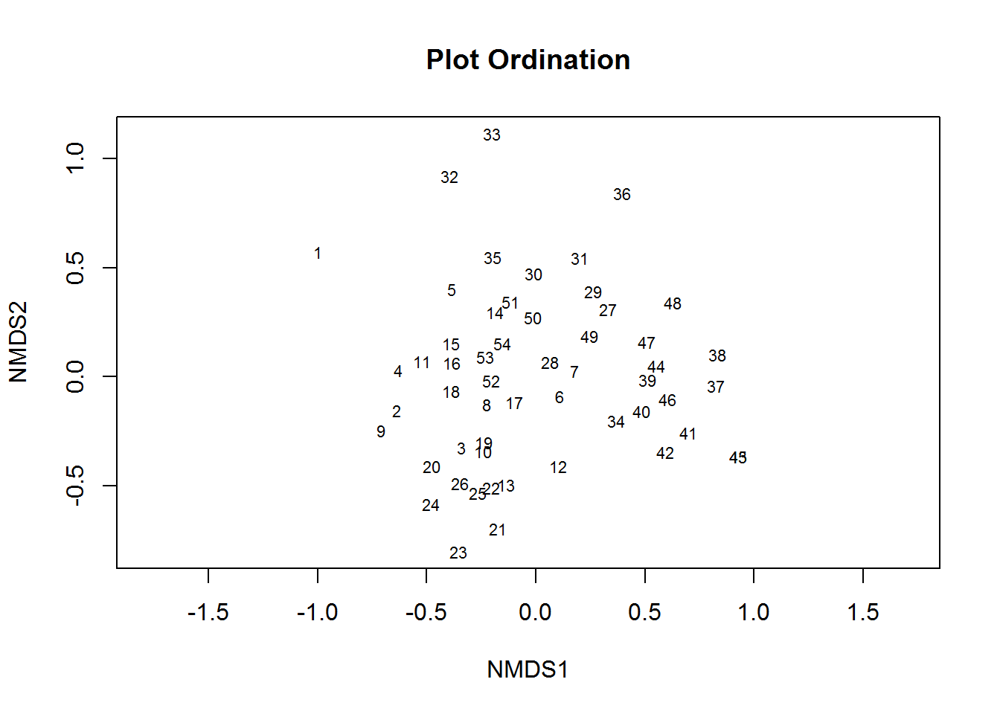
In a site or plot ordination, the points represent individual plots and those that are grouped closer to each other share similar species composition.
Species Ordination
Note: the ordination results have been hidden from here on as they can be long and cumbersome to scroll through. See the results from the Site/Plot Ordination for an example.
ord2spec<-metaMDS(data,k=2,try=50,trymax=100,binomial=TRUE,distance="bray")plot(ord2spec,display="species",main="Species Ordination",type="t")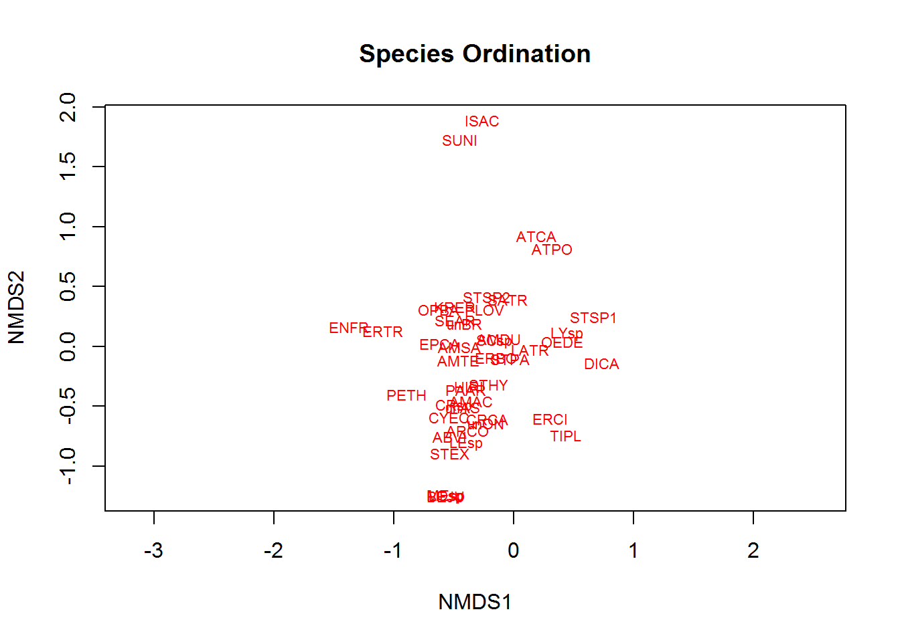
In a species ordination, points represent indiviudal speices and those grouped together tend to co-occur on the landscape.
Species & Site on same ordination
ord2comb<-metaMDS(data,k=2,try=50,trymax=100,binomial=TRUE,distance="bray")plot(ord2comb,display=c("sites","species"),main="Combined Ordination",type="t")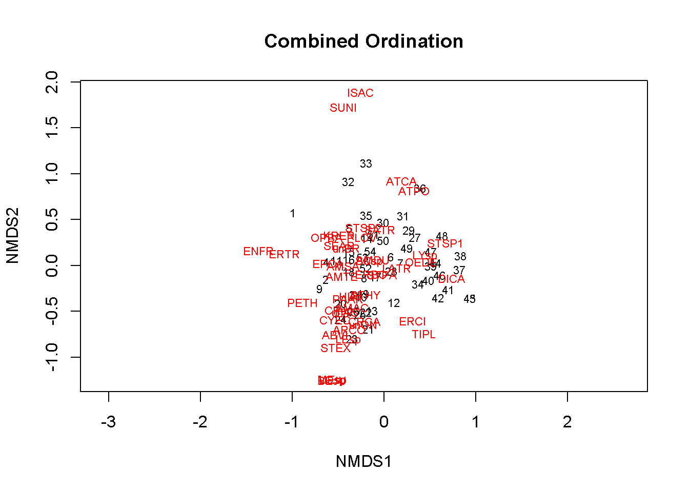
ord2site ##
## Call:
## metaMDS(comm = data, distance = "bray", k = 2, try = 50, trymax = 100, binomial = TRUE)
##
## global Multidimensional Scaling using monoMDS
##
## Data: data
## Distance: bray
##
## Dimensions: 2
## Stress: 0.2158371
## Stress type 1, weak ties
## No convergent solutions - best solution after 100 tries
## Scaling: centring, PC rotation, halfchange scaling
## Species: expanded scores based on 'data'ord2spec##
## Call:
## metaMDS(comm = data, distance = "bray", k = 2, try = 50, trymax = 100, binomial = TRUE)
##
## global Multidimensional Scaling using monoMDS
##
## Data: data
## Distance: bray
##
## Dimensions: 2
## Stress: 0.2158629
## Stress type 1, weak ties
## Two convergent solutions found after 50 tries
## Scaling: centring, PC rotation, halfchange scaling
## Species: expanded scores based on 'data'Ordination for Data Reduction
One of the most common uses of ordination is for data reduction. Used in this way, ordination separates strong and weak patterns in multivariate data to select the most important factors. This is done by taking a data set of n items by p variables (dimensions) and trying to effectively represent the information in a smaller number of dimensions, k.
Choosing Dimensions
Ordination results can be displayed in 1, 2 or 3 dimensions. In NMDS the solution may for each dimension and must be found separately.
One Dimension
ord1site<-metaMDS(data,k=1,try=50,trymax=100,binomial=TRUE,distance="bray") plot(ord1site,display="sites",main="1-Dimension",type="t")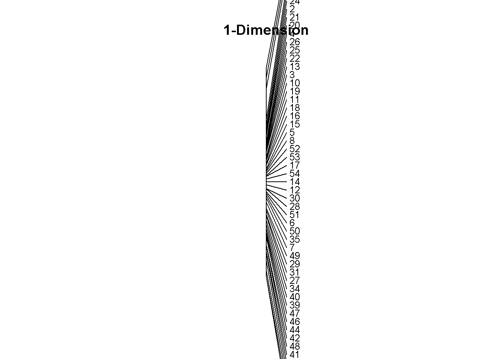
Two Dimensions
ord2site<-metaMDS(data,k=2,try=50,trymax=100,binomial=TRUE,distance="bray")plot(ord2site,display="sites",main="2-Dimensions",type="t")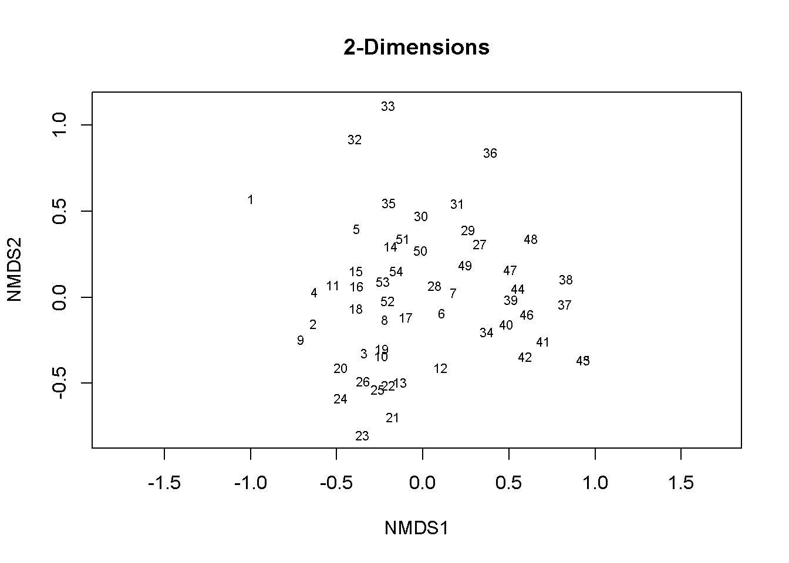
Three Dimensions
ord3site<-metaMDS(data,k=3,try=50,trymax=100,binomial=TRUE,distance="bray") ordiplot3d(ord3site,display="sites",main="3-Dimensions",choices=1:3,pch=19,zlab="Dissimilarity")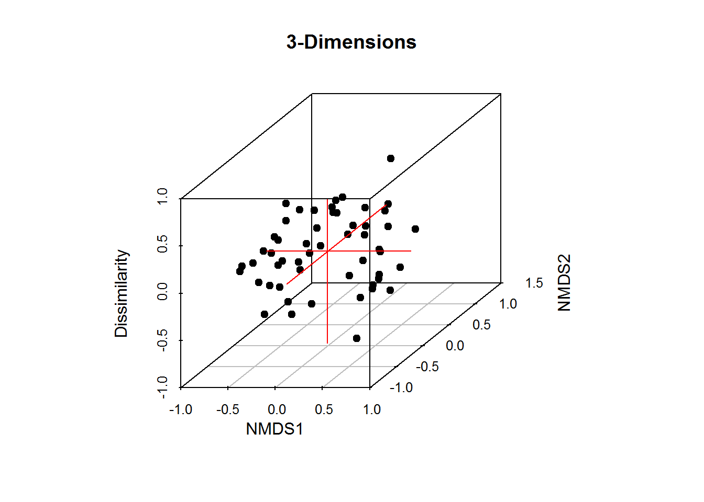
Determining the number of axes (or dimensions) depends on the number of discrete signals that can be detected against a background of noise. The number of axes increases with more complex data sets but 2-3 are most commony used.
Stress is used to help determine the number of dimensions requied. Essentially, it is a ‘badness of fit’ measure based on the residuals from the non-linear regression. Stress is scored on a scale from 0 to 1 with 0 being perfect fit. There are several ways to visualize stress including Goodness of Fit plots, Shepard Stress plots, and Scree plots.
Goodness of Fit
par(mfrow=c(1,2))
ord2site<-metaMDS(data,k=2,try=50,trymax=50,binomial=TRUE,distance="bray")gof<-goodness(ord2site)
gof ## [1] 0.04238964 0.04198191 0.03613041 0.03444928 0.02233460 0.03595485
## [7] 0.02934603 0.02183326 0.03869147 0.01819939 0.03798660 0.02937759
## [13] 0.02059901 0.02453919 0.02746917 0.02625091 0.01902769 0.03180864
## [19] 0.01925297 0.01992789 0.02181095 0.01739041 0.02457741 0.02191241
## [25] 0.02461613 0.03163855 0.03041117 0.02897788 0.03485733 0.03278309
## [31] 0.02994048 0.02863446 0.03931172 0.02242556 0.03620260 0.05642333
## [37] 0.01564788 0.03404811 0.02098117 0.02533081 0.02512462 0.03085302
## [43] 0.02709604 0.02864892 0.02709610 0.02527717 0.03047658 0.03668595
## [49] 0.02142446 0.02407874 0.02942945 0.02914905 0.01964624 0.02153102Plot goodness of fit by site
plot(ord2site,display="sites",main="2D Goodness of Fit",type="t")
points(ord2site,cex=2*gof/mean(gof))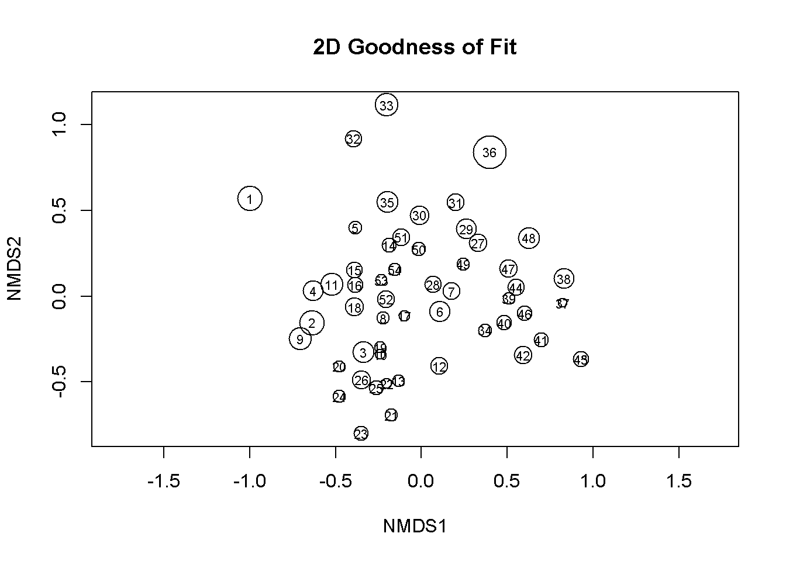
Goodnes of Fit 3D
ord3site<-metaMDS(data,k=3,try=50,trymax=100,binomial=TRUE,distance="bray")gof<-goodness(ord3site)
gof## [1] 0.03567623 0.01902941 0.01984100 0.02515689 0.02066678 0.02985576
## [7] 0.01751234 0.01682537 0.02966318 0.01337006 0.02723444 0.01826628
## [13] 0.01524397 0.02180989 0.02068377 0.01745434 0.01283121 0.02221471
## [19] 0.01467936 0.01313797 0.01647143 0.01208619 0.01854626 0.01660855
## [25] 0.01614891 0.02352528 0.01877572 0.02070229 0.02835843 0.02791045
## [31] 0.01958469 0.02511283 0.02316267 0.01813487 0.02668508 0.02133160
## [37] 0.01022903 0.02313699 0.01211491 0.01591810 0.01366958 0.01842885
## [43] 0.01758893 0.02190820 0.01758893 0.01683916 0.01503929 0.02655337
## [49] 0.01672831 0.02216052 0.02577583 0.02278262 0.01776587 0.01916589plot(ord3site,display="sites",main="3D Goodness of Fit",type="t")
points(ord3site,cex=2*gof/mean(gof))
Sheppard Plots
stressplot(ord2site,display="sites",main="2D Shepard Stress Plot")## Warning in plot.window(...): "display" is not a graphical parameter## Warning in plot.xy(xy, type, ...): "display" is not a graphical parameter## Warning in axis(side = side, at = at, labels = labels, ...): "display" is
## not a graphical parameter
## Warning in axis(side = side, at = at, labels = labels, ...): "display" is
## not a graphical parameter## Warning in box(...): "display" is not a graphical parameter## Warning in title(...): "display" is not a graphical parameter## Warning in plot.xy(xy.coords(x, y), type = type, ...): "display" is not a
## graphical parameter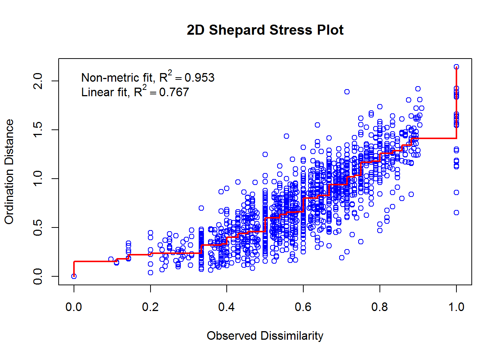
stressplot(ord3site,display="sites",main="3D Shepard Stress Plot")## Warning in plot.window(...): "display" is not a graphical parameter## Warning in plot.xy(xy, type, ...): "display" is not a graphical parameter## Warning in axis(side = side, at = at, labels = labels, ...): "display" is
## not a graphical parameter
## Warning in axis(side = side, at = at, labels = labels, ...): "display" is
## not a graphical parameter## Warning in box(...): "display" is not a graphical parameter## Warning in title(...): "display" is not a graphical parameter## Warning in plot.xy(xy.coords(x, y), type = type, ...): "display" is not a
## graphical parameter
How do you know the correct number of dimensions to use? The answer is subjective, and it’s up to you as an ecologiest to determine what makes the most sense. Typically, ordinations are done with 2 or 3 axes. If convergence is slow you can try adding another dimension or increase the number of trys (trymax).
Testing Hypotheses
At this point ordination axes are simply measures of dissimilarity without further ecoloigcal meaning. In order to test hypotheses, x and y axes can be correlated with enviornmental variables using biplot diagrams.
In biplot diagrams, correlation arrows (eigenvectors) show the direction and strength of correlations between environmental variables and the ordination space. The length of the arrow is proportional to the magnitude of change in that direction and represents the strength of the relationship between the variable and community.
lizzy<-read.table("TestHypotheses.csv", sep=",", header=TRUE, blank.lines.skip = TRUE) ##dataset with disturbance variable and lizard denstity by site
head(lizzy)## LizDens Dist
## 1 0 90
## 2 0 79
## 3 2 38
## 4 0 22
## 5 0 0
## 6 0 46Does lizard density differ by site?
liz<-envfit(ord2site ~ lizzy$LizDens, perm = 1000)
liz<-envfit(ord2site ~ lizzy$LizDens, perm = 1000)
liz##
## ***VECTORS
##
## NMDS1 NMDS2 r2 Pr(>r)
## lizzy$LizDens 0.999860 -0.016462 0.0722 0.1748
## Permutation: free
## Number of permutations: 1000Is the disturbance significantly diffrent between sites?
dist<-envfit(ord2site ~ lizzy$Dist, perm = 1000)
dist<-envfit(ord2site ~ lizzy$Dist, perm = 1000)
dist##
## ***VECTORS
##
## NMDS1 NMDS2 r2 Pr(>r)
## lizzy$Dist -0.41442 -0.91009 0.2326 0.002997 **
## ---
## Signif. codes: 0 '***' 0.001 '**' 0.01 '*' 0.05 '.' 0.1 ' ' 1
## Permutation: free
## Number of permutations: 1000Biplot Diagrams
Lizard density and site
plot(ord2site,display="site",main="Lizard Density and Site",type="t")
plot(liz, col="red", arrow.mul=(0.02/0.09)*5, label="")
Disturbance and site
plot(ord2site,display="site",main="Disturbance and Site",type="t")
plot(dist, col="blue", arrow.mul=(0.02/0.09)*5, label="")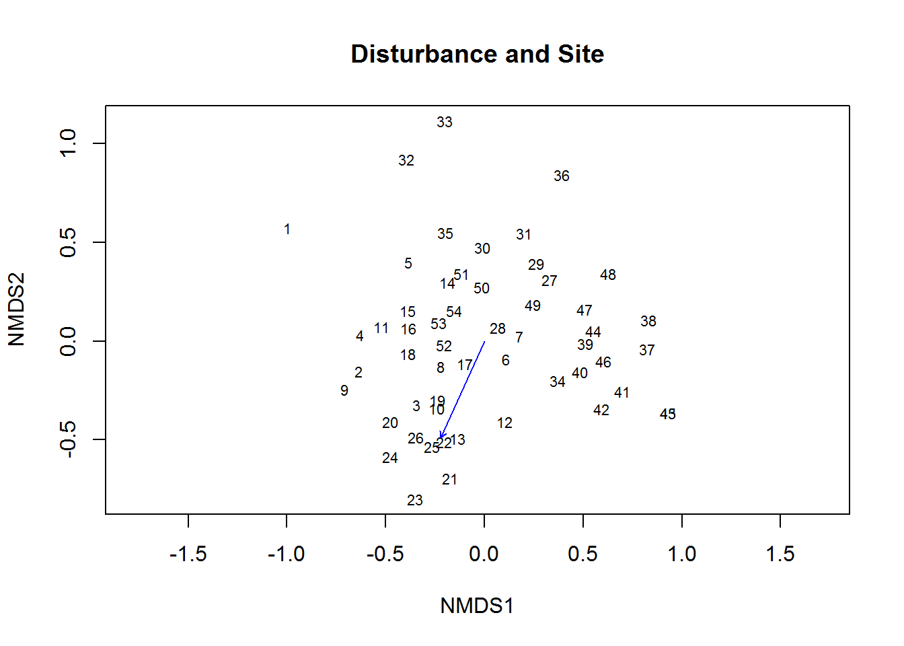
Lizard density and plant species
plot(ord2site,display="species",main="Lizard Density and Plant Species",type="t")
plot(liz, col="blue", arrow.mul=(0.02/0.09)*5, label="")Lizard density and disturbance
plot(ord2site,display="species",main="Disturbance and Plant Species",type="t")
plot(dist, col="blue", arrow.mul=(0.02/0.09)*5, label="")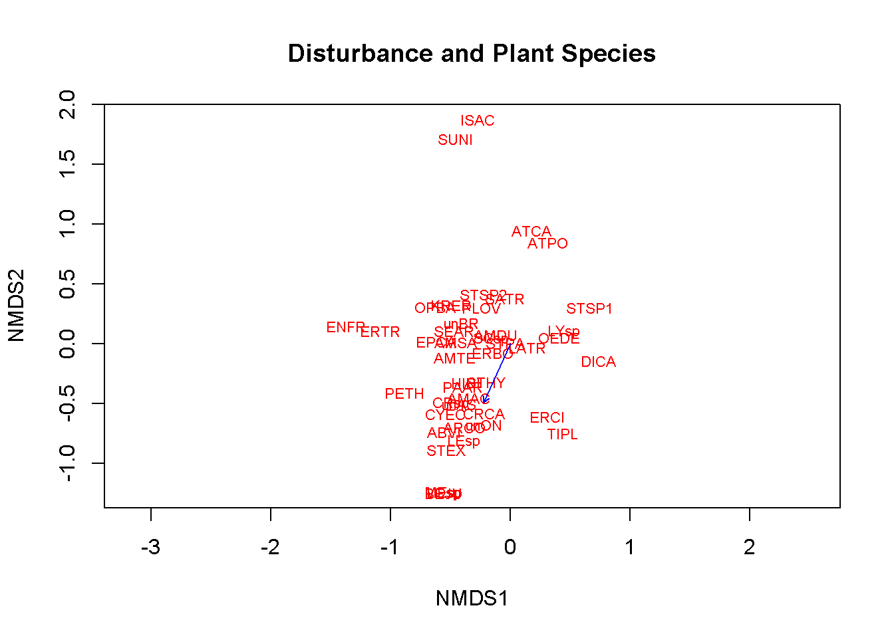
Cluster Analysis: Hierarchic clustering
Ordination vs. classification The main purpose of both is to interpret patterns in species composition. Classification is used for grouping ecological communities and ordination is used for arranging data along gradients.
The vegan package allows you to overlay classification approaches (heirchical clustering) onto an ordination. The hclust function can be used to combine classification (via cluster analysis) and ordination (NMDS).
Begin by determining dissimilarities (much like ordination). vegdist gives the ecological dissimilarity between each pair of sites. Bray-Curtis is the default index and good in detecting underlying ecological gradients.
d<-vegdist(data)
par(mfrow=c(3,1)) ##plot 3 panels above eachother
par(mar=c(3,4,1,1)+.1) ##define marginshclust has 3 alternative clustering methods: single linkage, complete linkage and average linkage - Single linkage (aka nearest neighbor): the distance between 2 clusters is the shortest possible distance among members of the clusters. - Complete linkage (aka furthest neighbor): the default method; defines the cluster distance between two clusters to be the maximum distance between their individual componentsthe; distance between 2 clusters is the longest possible distance between the groups. - Average linkage: the distance between the clusters is the distance between cluster centroids.
Complete linkage clustering
ccom<-hclust(d,method="complete")
plot(ccom,hang=-1,main="Complete Linkage")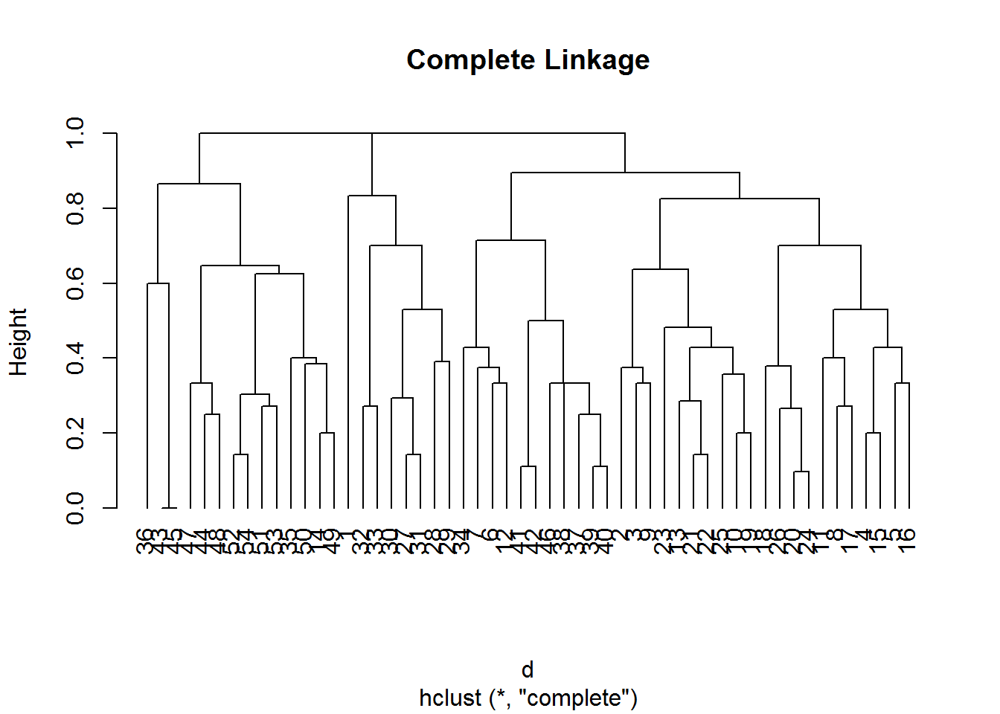
Run the cluster functions to produce a dendrogram or visualization of the dissimilarity matrix, based on the presence-absence data. Dendograms are visual demonstrations of the dissimilarity matrix where vertical axes show the ‘fusion level,’ or dissimilarity between pairs. You can determine how many classes to beak the dendrogram into, based on dissimilarity. But, again, this is a subjective call that’s up to you as an ecologist.
Functions for overlaying classifications onto an ordination
Overly clusters onto the ordination using convex hulls, spiter plots, and elipses.
par(mfrow=c(1,3)) #Run and plot ordinations again
par(mar=c(3,4,1,1)+.1)
ccom<-hclust(d,method="complete")
cl<-cutree(ccom,5) ##cut tree into user specified # of clustersClustering overlaid on site ordinations
ord2site<-metaMDS(data,k=2,try=50,trymax=100,binomial=TRUE,distance="bray") plot(ord2site,display="sites",main="Plot Ordination",type="t")
ordihull(ord2site,cl,lty=3) 
For non-overlapping classes use convex hulls
ord2site<-metaMDS(data,k=2,try=50,trymax=100,binomial=TRUE,distance="bray") plot(ord2site,display="sites",main="Plot Ordination",type="t")
ordispider(ord2site,cl,col="blue",label=TRUE)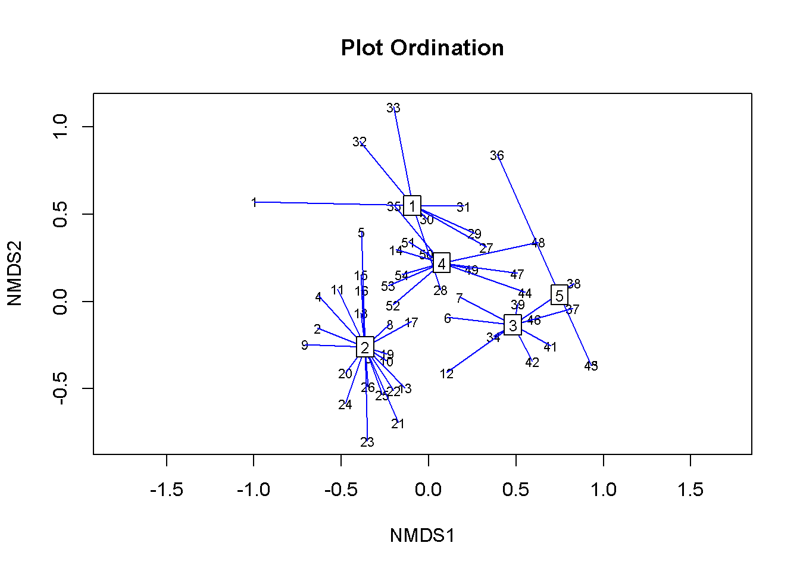
For overlapping classes use spider plot
ord2site<-metaMDS(data,k=2,try=50,trymax=100,binomial=TRUE,distance="bray") plot(ord2site,display="sites",main="Plot Ordination",type="t")
ordiellipse(ord2site,cl,col="red") 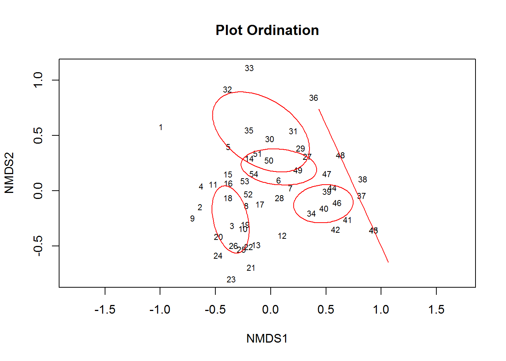
Use ellipse plot with average dispersions
Clustering overlaid on species ordinations
ord2spec<-metaMDS(data,k=2,try=50,trymax=100,binomial=TRUE,distance="bray")plot(ord2spec,display="species",main="Species Ordination",type="t")
ordihull(ord2site,cl,lty=3)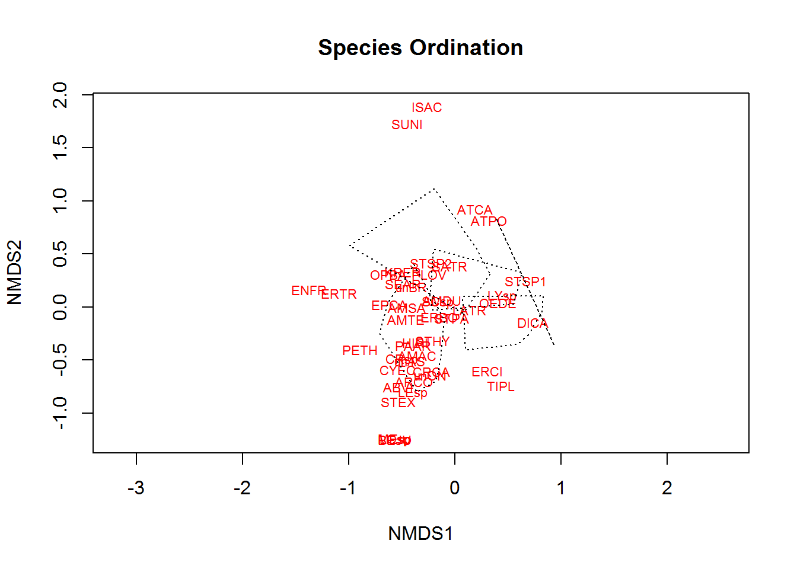
For non-overlapping classes use convex hulls
ord2spec<-metaMDS(data,k=2,try=50,trymax=100,binomial=TRUE,distance="bray")plot(ord2spec,display="species",main="Species Ordination",type="t")
ordispider(ord2spec,cl,col="blue",label=TRUE)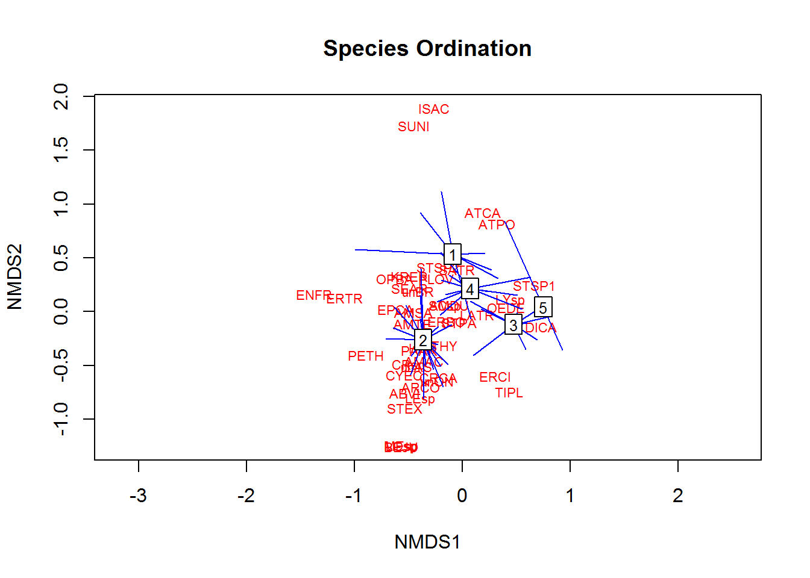
For overlapping classes use spider plot
ord2spec<-metaMDS(data,k=2,try=50,trymax=100,binomial=TRUE,distance="bray")plot(ord2spec,display="species",main="Species Ordination",type="t")
ordiellipse(ord2spec,cl,col="blue")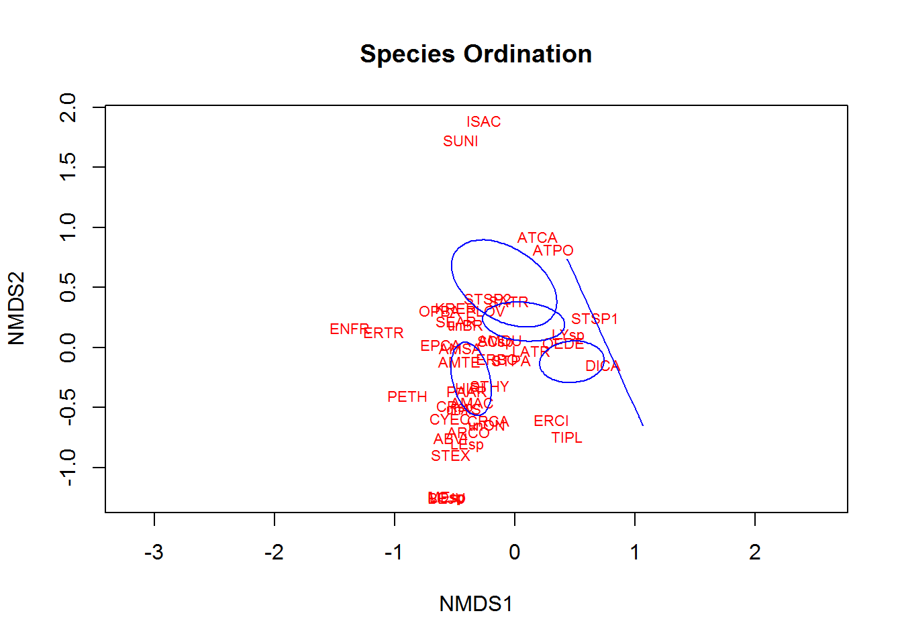
Use ellipse plot with average dispersions
3 Dimensional!!
Dendrograms can also be incorporated into 3 dimensional dynamic plots that allow you to visually assess the groupings.
library(scatterplot3d)
library(rgl)
par(mfrow=c(1,1))
par(mar=c(3,4,1,1)+.1)orditree3d: Draw a 3D plot of dendrogram over the ordination
ord3site<-metaMDS(data,k=3,try=50,trymax=100,binomial=TRUE,distance="bray")
##requires ordination and hierarchic cluster analysisd<-vegdist(data)
cl<-hclust(d,"complete")
orditree3d(ord3site,cl,display="sites",type="t") 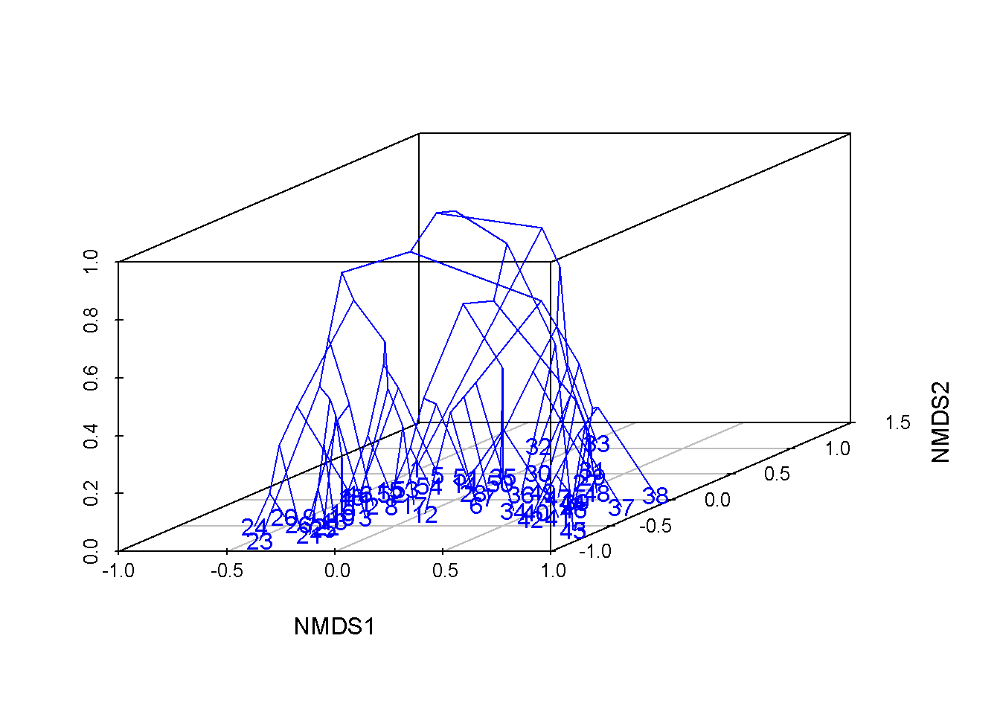
Draw a dynamic 3D plot of dendrogram over the ordination where you can rotate in an RGL device
ord3site<-metaMDS(data,k=3,try=50,trymax=100,binomial=TRUE,distance="bray")d<-vegdist(data)
cl<-hclust(d,"complete")
ordirgltree(ord3site,cl,col="red",type="t",display = "site")Add hierarchical clusters to RGl image
caver<-hclust(d,method="aver")
cl<-cutree(caver,20)
orglellipse(ord3site,cl,col="blue",kind="ehull")## Warning in ellipsoidhull(x[groups == g, , drop = FALSE]): algorithm
## possibly not converged in 5000 iterations
## Warning in ellipsoidhull(x[groups == g, , drop = FALSE]): algorithm
## possibly not converged in 5000 iterations
## Warning in ellipsoidhull(x[groups == g, , drop = FALSE]): algorithm
## possibly not converged in 5000 iterations
## Warning in ellipsoidhull(x[groups == g, , drop = FALSE]): algorithm
## possibly not converged in 5000 iterations
## Warning in ellipsoidhull(x[groups == g, , drop = FALSE]): algorithm
## possibly not converged in 5000 iterationsordiplot3d Three-Dimensional Ordination Graphics with disturbance variable fitted
ord3site<-metaMDS(data,k=3,try=50,trymax=100,binomial=TRUE,distance="bray")ef<-envfit(ord3site~lizzy$Dist,choices=1:3)
x<-ordiplot3d(ord3site,type="n",angle=45,choices=1:3,display="site",col="red",ax.col="black",envfit=ef)
points(x,"points",pch=5,col="red",cex=0.5) ##to customize how points look, pch=different shapes, cex=size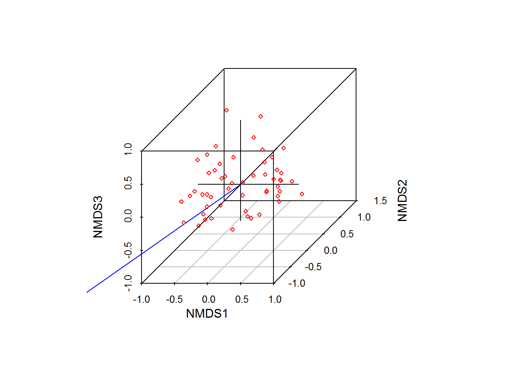
type=“h” is a ‘pin’ version of ordiplot3d
ord3site<-metaMDS(data,k=3,try=50,trymax=100,binomial=TRUE,distance="bray")ef<-envfit(ord3site~lizzy$Dist,choices=1:3)
x<-ordiplot3d(ord3site,type="h",angle=45,choices=1:3,display="site",col="red",ax.col="black",envfit=ef)
points(x,"points",pch=5,col="red",cex=0.5)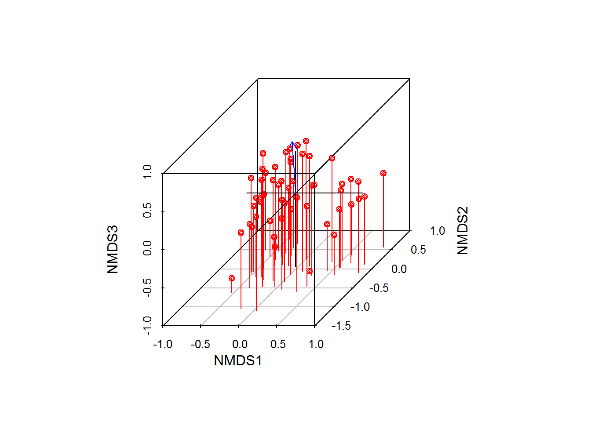